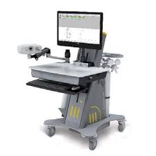
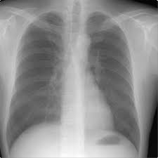
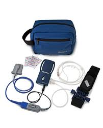
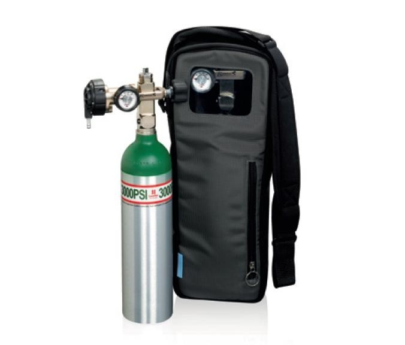

- 
PFT
Spirometry measures the amount of air entering and leaving the lungs. The technician performs this simple test using a computerized instrument. This machine measures airflow that passes through the machine. The patient inhales deeply and then completely exhales through the machine. This is a valuable screening test that can identify obstructive diseases (asthma, emphysema) or restrictive diseases (fibrosis).
- 
Chest X-rays
The physician uses the chest x-ray to reveal the structure of the chest and lung areas. This procedure may expose a large number of pulmonary diseases such as fibrosis and cancer as well as infections, pneumonia and extra fluid accumulations. The procedure is common and painless. The patient stands in front of the machine and holds his breath for a moment while the x-ray beam exposes the film. The photograph is developed and analyzed immediately.

EKG
An electrocardiogram is a simple, painless test that measures your heart's electrical activity. It's also known as an ECG or EKG. Every heartbeat is triggered by an electrical signal that starts at the top of your heart and travels to the bottom
- 
Sleep Tests
An overnight sleep study, also called a polysomnogram, is a procedure that monitors body functions such as brain waves, heart rate, leg movements and breathing during sleep. ... Diagnostic studies are used to evaluate whether you have a sleep disorder.
- 
Walking Ox
In exercise testing, the physician connects the patient to an oxygen sensor called an oximeter. The oximeter measures the amount of oxygen that the lungs are transferring into the blood. Exercise oximetry or pulmonary stress testing is useful to judge exercise tolerance, abnormal breathing patterns and possibly the need for supplemental oxygen.